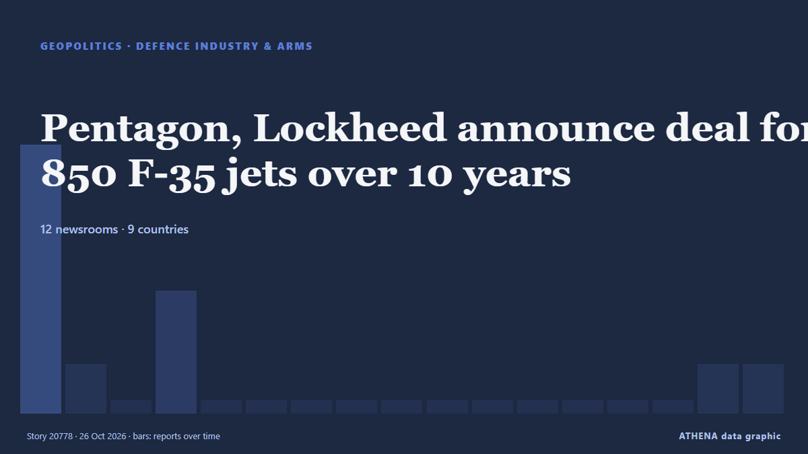

Pentagon, Lockheed announce deal for 850 F-35 jets over 10 years

The Pentagon and Lockheed Martin announced on Thursday a 10-year agreement for the production of 850 F-35 jets. من The Korea Times
نشرته بشكل مستقل 12 مصدرًا في 9 دول منذ 22 أكتوبر، وأول من نشره APA (English)؛ والتغطية هدأت. لا يجد ATHENA مؤشرات خطر في التغطية. الثقة 90٪ (مرتفعة)، وعدد المصادر المستقلة المؤكِّدة: 12، بمتوسط موثوقية للمصادر يبلغ 74٪. وسائل الإعلام حسب البلد: الولايات المتحدة (3), تركيا (2), كندا (2). التغطية: من 22 أكتوبر إلى 26 أكتوبر، 99 ساعة.
لماذا يهم: قد تغيّر التطورات الأمنية والدبلوماسية التحالفات والتجارة والأسواق إلى ما هو أبعد بكثير من الدول المعنية مباشرة.
ما الذي تغيّر: 2 تقارير جديدة من 2 غرف أخبار خلال 24 ساعة حتى 26 أكتوبر.
تُعرض العناوين بالإنجليزية كما نُشرت.
نظرة سريعة
اختير وقُيِّم وكُتب وفق منهجية ATHENA المنشورة. لا يتدخل أي محرر في الأحداث بعينها. كيف يُنتَج ›
| 22 Oct 11:23 UTC | 7 |
|---|---|
| 22 Oct 17:23 UTC | 1 |
| 22 Oct 23:23 UTC | 0 |
| 23 Oct 05:23 UTC | 3 |
| 23 Oct 11:23 UTC | 0 |
| 23 Oct 17:23 UTC | 0 |
| 23 Oct 23:23 UTC | 0 |
| 24 Oct 05:23 UTC | 0 |
| 24 Oct 11:23 UTC | 0 |
| 24 Oct 17:23 UTC | 0 |
| 24 Oct 23:23 UTC | 0 |
| 25 Oct 05:23 UTC | 0 |
| 25 Oct 11:23 UTC | 0 |
| 25 Oct 17:23 UTC | 0 |
| 25 Oct 23:23 UTC | 0 |
| 26 Oct 05:23 UTC | 1 |
| 26 Oct 11:23 UTC | 1 |
لماذا هذه الأرقام
الأهمية
الخطر
الثقة
التغطية — من نشر الخبر ومتى
العنوان كما نُشر · يفتح الأصل- APA (English) · أذربيجانLockheed, Pentagon strike initial deal to produce 850 F-35 jets
- The Korea Times · كوريا الجنوبيةPentagon, Lockheed announce deal for 850 F-35 jets over 10 years
- Euractiv · بلجيكاPentagon strikes decade-long deal for at least 850 F-35s
- Breaking Defense · الولايات المتحدةPentagon, Lockheed agree to decade-long F-35 framework deal for hundreds of jets
- Manufacturing Dive · الولايات المتحدةLockheed, Pentagon reach $7B F-35 fighter jet deal
- The Straits Times · سنغافورةPentagon eyes biggest-ever F-35 deal with plans to buy at least 850 more jets
- Defense News · الولايات المتحدةPentagon, Lockheed agree to 10-year deal for 850 F-35 jets
- Bangkok Post — page reader · تايلاندPentagon, Lockheed announce agreement for 850 F-35 jets over 10 years
- Türkiye Today · تركياPentagon commits to at least 850 F-35s in decade-long Lockheed deal
- Türkiye Today · تركياPentagon and Lockheed Martin announce 10-year deal for 850 F-35 jets
- Times of India · الهندUS draws up $78bn-plan for 850 F-35 jets; eyes Air Force fleet of 1,509 fighters by 2035
- The Globe and Mail · كنداCanada receives first F-35 fighter jets from U.S.
- CBC News (alternative feed) · كنداCanada receives first F-35 jets from U.S., as full order remains under review